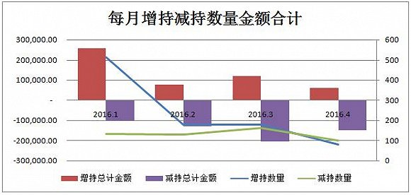
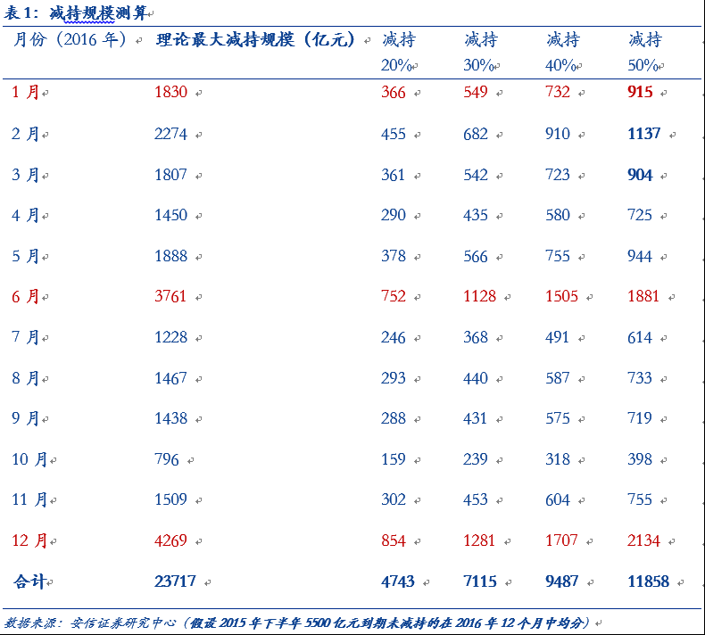
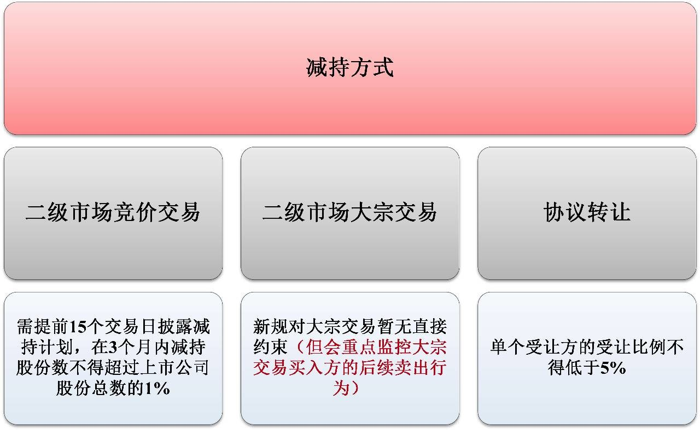

大庄家的一万多亿不知道能扛多久。这边一个月减持1400。@AndrewXAndrew:据@界面，4月101家企业公布了减持公告，而增持的公司仅82家，减持数量再次超过增持数量；2016年1月持股5%以上大股东不得减持的规定到期后，已经连续三个月净减持，其中4月两市合计减持金额CNY 1400亿。另据安信策略之前测算2016年各月理论最大减持规模，6月达到CNY 3761亿，仅次于12月的CNY 4269亿。 